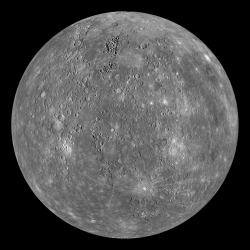

Mercury is the very first planet in our solar system and is also the smallest too. Being the first planet in our solar system, it also means it is the innermost planet separating itself from the sun at an average of 57.91 million km and it take Mercury about 88 Earth days for it to complete its orbit around the sun. Mercury was named after the Mercury, who was a Roman who sent messages to the gods and was given the symbol ☿. It may be the smallest planet in our solar system, but compared to land on Earth, it covers a huge 6.083×1010 km3 part of land and weighs nearly 3.3011×1023 kg. With these statistics, the gravitational pull on Mercury is 3.7m/s 2, which is almost 3 times smaller than Earth's, meaning you, would fall 3 times slower than you would on Earth. From space, Mercury has that same gray look as the moon, maybe some white specs here and there and some blue tints in some areas as well, but overall it looks gray, until you actually land on it, and that gray colour suddenly turns into a brown. If you were to land on Mercury, the temperature would range from 100K to 700K, so make sure you're packed up!
Wikipedia, The Free Encyclopedia. (September 16, 2016) Mercury (planet). Retrieved September 25, 2016, from https://en.wikipedia.org/wiki/Mercury_(planet)
Digital Image: Mercury In Colour, ~https://upload.wikimedia.org/wikipedia/commons/thumb/d/d9/Mercury_in_color_-_Prockter07-edit1.jpg/260px-Mercury_in_color_-_Prockter07-edit1.jpg~ Retrieved September 25, 2016.
Digital Image: Mercury taken by MESSENGER, ~https://upload.wikimedia.org/wikipedia/commons/thumb/3/3f/Mercury_Globe-MESSENGER_mosaic_centered_at_0degN-0degE.jpg/220px-Mercury_Globe-MESSENGER_mosaic_centered_at_0degN-0degE.jpg~ Retrieved September 25, 2016.